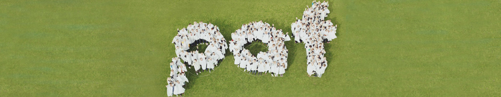

О PAF
Paf – игорная компания, имеющая лицензию и контролируемая со стороны самоуправления Аландских островов. Наша компания была основана в 1966 году, с тех пор наша прибыль идет на благие дела. Ничего не поменялось и сейчас. Если выигрываете вы, тот мы радуемся вместе в вами. Когда выигрываем мы, прибыль идет тем, кто в ней нуждается. Играйте среди друзей, ведь среди нас не проигравших!"
Andres Ingves